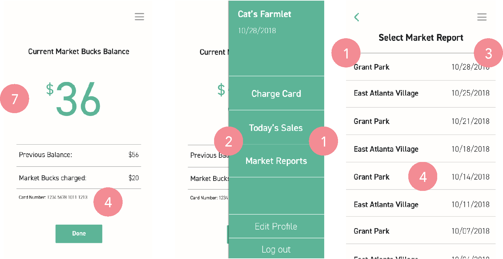

EBT User (optional)
Market Manager
Vendor

Overview
The Problem
Many farmers markets in Atlanta accept EBT credit, but they have to use a government-regulated system to distribute this credit, and not all farmers market vendors can have access to these systems. Thus, the farmers market management has to circumnavigate this system by exchanging credit for wooden tokens, which allow EBT users to buy food from vendors with these tokens. While this token system is very straightforward, it is also cumbersome, prone to loss, and invites a lot of stigma for EBT users. The managers of these markets also have to hand-write token amounts from each vendor and report them in a spreadsheet for vendor reimbursements, which takes time and is also prone to error.
The Solution
Our team reinvented the EBT process at Atlanta's CFM farmers markets by creating Market Bucks: a digital system which managers, vendors, and EBT users can use. This system involves a card, much like a gift card, where EBT users can upload their EBT credit instead of using wooden tokens. The card will also be charged using the Market Bucks app, and all transactions will be stored on our system, eliminating a lot of the reporting process that managers had to do in order to reimburse vendors for the tokens. Overall, this solution makes the process a lot more efficient, decreases stigma felt by EBT users, and makes fresh produce more accessible to a large group of people.
My Roles
• Created storyboards to visualize the different processes
• Designed initial wireframes of screens
• Wired together screens for prototypes in Invision
• Facilitator of heuristic evaluations and mock farmers market
My Team
• Me
• Bang Tran
• Rachel Feinberg
• Suyash Thakare
Methods Used
• Background and Domain Research
• Interviews
• Brainstorming and Ideation (Sketching Design Alternatives and Storyboarding)
• Feedback on Design Alternatives
• Prototyping
• Think Aloud Protocol
• Heuristic Evaluations
• Mock Farmers Market
Research Process
Background and Domain Research
Below are images that we obtanied from our research on the EBT process at farmers markets, how it works, and the pain points associated with it.


EBT Process in CFM Farmers Markets
Wooden Tokens given to EBT Customers to exchange for food purchases
Handwritten report of tokens at each vendor that the manager has to track and report again into Excel
Target Users
*
Market managers
• Process EBT Cards into a currency that is usable at the farmers market
• Reimburse vendors
• Report weekly EBT funds in internal CFM systems and external partner systems
*
Vendors
• Accept EBT funds for payment at their booths
• Reimbursed by market managers for the goods sold to EBT Customers
*
EBT users
• Use EBT funds at the farmers market to purchase goods
EBT System
*
Design criteria for the EBT process
• Process the EBT funds into something that is accessible and usable by both EBT Customers and Vendors at the farmers markets
• Allow EBT users to purchase products with the processed form of EBT funds
• Allow Vendors to accept the processed form of EBT funds
• Allow Market Managers to track and report EBT spending data (e.g. how much EBT funds did a vendor accept during the market?)
Interviews
5Market Managers
5Vendors
4EBT Users
We conducted semi-structured interviews with market managers, vendors, and EBT users at a farmers market in order to understand an overview of frustrations with the system. We used this data to construct our usability criteria and task analysis for the system.

*
Market managers
• Difficult and lengthy to count and track tokens
• Do not like redundant reporting of EBT
• Like efficiency
• Found errors with token counting from both managers and vendors
*
Vendors
• Want management to take care of reporting EBT
• Like digital reimbursement
• Prefer sooner reimbursement time - current time is unreliable
• Like simplicity
• Not happy that reimbursement amount is sometimes incorrect
*
EBT users
• Have smartphones
• Are tech savvy
• Believe that EBT tokens can separate and stigmatize EBT users from other customers
• Forget or misplace physical tokens
Task Analysis
Point is - It's long and complicated
Design Process
Brainstorming and Ideation
Brainstorming Sketches

EBT User Design Alternative 1: Market Bucks Card


EBT User Design Alternative 2: Market Bucks Basket

EBT User Design Alternative 3: Market Bucks App
Vendor App
Market Manager App

Feedback on Design Alternatives
We brought our three alternate design ideas for EBT users to two farmers market managers, who gave feedback on these designs to help us choose which design idea to move forward with.
Feedback Results
*
Card System
“This makes sense to me, and the cards wouldn’t cost that much to produce, since the wood tokens are expensive.”
“Overall this is the one I like the most. It’s the simplest and makes the most sense for our organization. Cards are easy.”
*
Basket System
“Okay, maybe that was harsh, but we would not have anywhere to store all these. Grant Park has 2000+ people every market. We would need a lot of baskets”
“What if you have a lot of stuff in the basket and it’s really heavy to lift up to scan?”
*
App System
“I feel like this has too many steps. It’s interesting but it’s a little complicated to understand and explain.”
“I don’t really like downloading super specific apps that have just one function, so I don’t really like this one.”
From this feedback, we decided to go with the Market Bucks card for EBT users.
We would keep a mobile system for market managers and vendors to process the Market Bucks card and store information.
Prototyping
QR Card
Market Manager, Vendor, and Optional EBT User Apps
EBT User (optional)
Market Manager
Vendor
Usability Testing
Think Aloud Protocol
2Market Managers
3Systems to Evaluate
13Tasks Performed
Market managers, who also knew of the perspectives of vendors and EBT users, ran through specified tasks on all three aspects of our systems. By thinking aloud while conducting the tasks, we gained feedback on if the system met the requirements for ease of use and understandability.

Results
*
Market manager app
• Felt that the app would speed up the process of reporting and loading tokens
• Reporting page items did not seem clickable, even though they were
• Nice to not have to count tokens when taking payment
• Wouldn't "miscount tokens or lose them"
• What about refunds or correcting mistakes from charging the card the wrong amount?
*
Vendor app
• Vendors should not be able to see EBT user balance automatically since it is private information - should be optional based on the EBT user
• More accurate than counting tokens
• Needs an easy way to switch between this app and Square for transactions
*
EBT app and Market Bucks card
• Log in screen was confusing with the multiple and unnecessary options on the screen
• Dates on reports page did not seem clickable, even though they were
• Liked that it did not require an account
• Transaction history useful to EBT users
• Market Bucks card much easier and faster to use than tokens
• Market Bucks card has more "dignity" than the tokens
Heuristic Evaluations
3Evaluators
3Systems to Evaluate
10Tasks Performed
8Nielsen's Heuristics used
Results
Market Manager App
Vendor App
EBT User App
1.
Error prevention
• Increase the font size of the amount that the user is charged and dates
• Accidentally clicking outside pop-ups might cause confusion
• Was tempted to click "Market Reports" at first when navigating to "Today's Sales"
• Pick farmers markets first and then the date in the market report
2.
User control and freedom
• "Home page" does not feel like a home page
• Visibility of "Today's Sales" low
3.
Recognition rather than recall
• It would be easier to select the market first and then the day
• Grouping by date for market reports would help identify markets more easily
• Provide more details about transactions
• Didn't immediately notice "check balance" button, had to scan screen
4.
Consistency and standards
• The terminology of token and EBT should be the same, confusing otherwise
• Card number text is a bit small - what would be the standard minimum size for accessibility?
• Make it obvious that you can press a row to see the details of each transaction
5.
Aesthetic and minimalistic design
• Make the + and - look clickable, and add an overlay behind the pop-up
6.
Help users recognize, diagnose, and recover from errors
• The number of colored dots doesn't equal the number of tokens added
• Give feedback about storage of information
7.
Match between system and real world
• Balance shouldn't be shown to the vendor for EBT user privacy
Mock Farmers Market
3Participants
1System to Evaluate
2Tasks Performed
The mock farmers market was a simulation of how the Market Bucks card system would perform compared to the current token system in an environment similar to that of a real farmers market. This evaluation method allowed us to collect qualitative data during the process of our participants using the Market Bucks card and the token system to compare tasks such as loading a card with EBT funds and purchasing an item at a vendor. Two team members were mock managers and vendors, while one team member was a note taker.
Map of simulated farmers market
EBT User Persona (given to participants)
Results
• Overall, the Market Bucks card performed better with increased efficiency and security, and decreased stigma
• Token system was frustrating to count out and time consuming
• Market Bucks offered more similarity and belonging with credit card users
Final
What I Learned
• Designing for multiple users in one system is hard, and it takes a lot of consideration from multiple methods in order to implement a system that meets the needs from lots of different users and criteria.
• Working under a strict context (such as this one, with limited internet capabilities, funding, and barriers to technology) means that you won't always be able to implement everything you would ideally want in a system for the sake of your users.
• Sometimes the simplest technological solution is the best one (found in the Market Bucks card). However, it will always take rich research and user feedback in order to decide which solution is indeed the best one.
Future Considerations
• How do we account for the limited internet connection in farmers markets? When the internet is down, how can we still take Market Bucks payments through the system?
• While the Market Bucks system allows the EBT user to feel more like a regular card user, the colors on the Market Bucks card are still loud and unique with the title of the system on it. If other people catch wind that Market Bucks exists for the purposes of EBT, the card still might not take away from the stigma. In the future, we would either make the design of the card more similar to a normal credit card, or expand the Market Bucks to generic farmers market gift cards so that the card would not be distinguishable between gift cards and EBT balances.